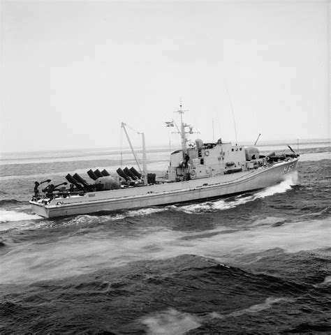
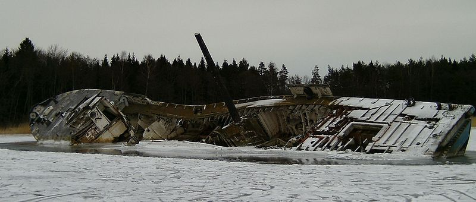
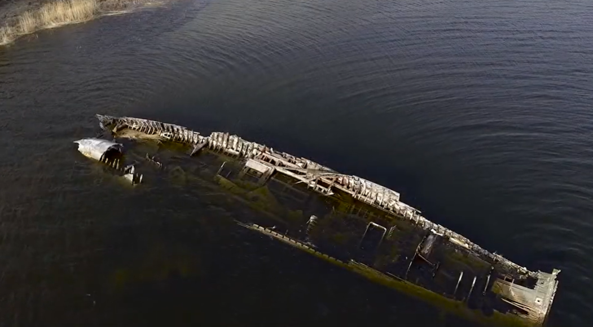

Status: Shipwreck
The Arkö class, also known as Type 57, consisted of twelve wooden minesweepers (M57–M68) built during the 1950s to address the growing threat of advanced magnetic mines during the Cold War. The design was inspired in part by American and German models, with a strong emphasis on non-magnetic materials. The hulls were constructed from laminated pine in three layers over wooden frames, using ferrite and non-magnetic components such as aluminum and stainless steel for engines, sweeping equipment, and fittings. This made the vessels easy to degauss (demagnetize) in specialized facilities. M63 Aspö was built entirely at the Karlskrona Naval Yard, including both hull and equipment, and was launched in 1962. As one of the later ships in the series, she shared the class’s standard specifications: a length of 44 meters, a beam of 7.5 meters, a draft of 2.7 meters, and a displacement of 312 tons. Propulsion consisted of two Mercedes-Benz MB 820 Gb-1 diesel engines producing a combined 1,600 horsepower, driving KaMeWa propellers, with a top speed of 16 knots. The normal crew complement was 23–24 personnel, and the only armament was a 40 mm Bofors automatic cannon, although some vessels were later upgraded with improved fire control systems and protective gun shields. In service, Aspö was primarily used for minesweeping operations with paravanes, acoustic buoys, and mechanical sweeps, operating both independently and in divisions, for example the 412th Minesweeper Division. The class participated in major exercises such as Operation Kabeljo in 1964, during which a 13-kilometer cable route across the Kattegat was swept. The ships also performed surveillance and transport duties. During the 1960s and 1970s, problems with deck leaks and rot emerged, leading to modifications, including replacement with fiberglass-reinforced polyester on some vessels. In the 1980s, several ships were modernized with hydraulic cranes and improved fire control systems. Aspö was decommissioned on June 30, 1989, sold in 1991, and eventually became civilian property. Sometime in the late 1990s, the vessel ran aground at Alholmsudd in the northern part of Stora Värtan in the Stockholm archipelago. The position is often given as approximately 59°26.376′N 18°09.018′E. The Swedish Maritime Administration recorded it as a wreck in 1999 (notice 1045). Attempts to contact the owner and salvage the wreck were made around 2006 without success. On February 25, 2013, the superstructure was damaged by fire, and the wreck has continued to deteriorate ever since. Aerial photographs, quadcopter videos, and on-site images show a clearly decayed wooden hull lying partially on its side in shallow water.



{kind=link}